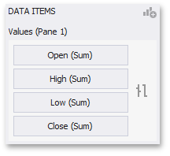

Financial Series
Financial series are used to illustrate stock prices.
The following types of Financial series are available.
Coloring Specifics
Note that financial series do not support a standard coloring mechanism used to color chart series points. The Chart dashboard item colors series points of financial series in the following way.
- Black if the price at the end of the previous period is lower than the price at the end of the current period.
- Red if the price at the end of the previous period is larger than the price at the end of the current period.
High-Low-Close
When you select the High-Low-Close series type in the Designer, the DATA ITEMS area displays three data item placeholders. High-Low-Close series require three measures to be provided.

- High - the maximum price within the specified period (the top of the series point).
- Low - the minimum price within the specified period (the bottom of the series point).
- Close - the price at the end of the specified period (the tick mark).

Stock
When you select the Stock series type in the Designer, the DATA ITEMS area displays four data item placeholders. Stock series require four measures to be provided.

- Open - the price at the beginning of the specified period (the left tick mark).
- High - the maximum price within the specified period (the top of the series point).
- Low - the minimum price within the specified period (the bottom of the series point).
- Close - the price at the end of the specified period (the right tick mark).

Candle Stick
When you select the Candle Stick series type in the Designer, the DATA ITEMS area displays four data item placeholders. Candle Stick series require four measures to be provided.

- Open - the price at the beginning of the specified period.
- High - the maximum price within the specified period (the upper shadow top).
- Low - the minimum price within the specified period (the lower shadow bottom).
- Close - the price at the end of the specified period.